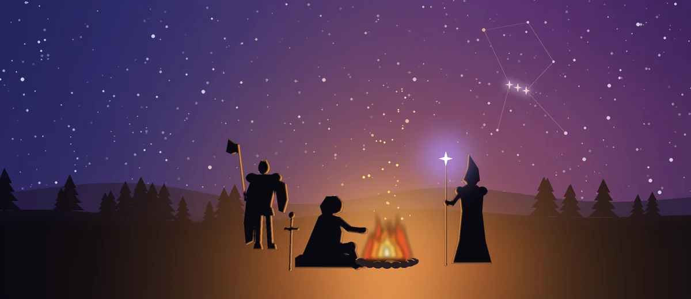
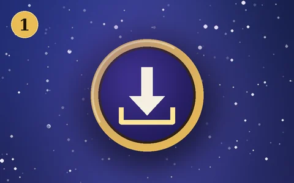
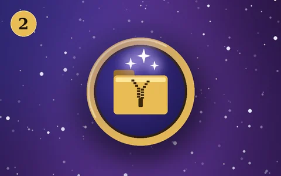
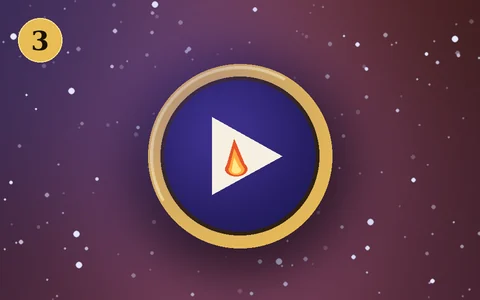
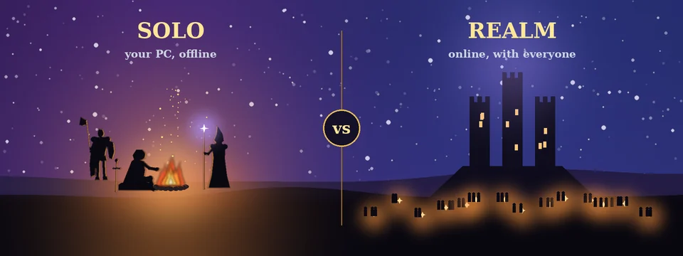

Server busy, or just want the world to yourself? Play Solo runs the whole game offline on your PC, from the same Open Vanilla launcher: switch PLAY to SOLO and press PLAY. The same client and addons, your own world server, and companions to fill your group for dungeons.

Your own private world server, SPP Classics (CMaNGOS), runs hidden in the background while you play. No queue, no lag spikes, no internet needed once it's set up.
The same Open Vanilla launcher and client, with the same built-in Vanilla Remastered addons, as online play.
Computer-controlled companions (playerbots) join your party, so dungeons and group quests work with nobody else online. Bots also wander the world, so it doesn't feel empty.
The servers only listen on your own PC, so nobody else can connect. Play at your own pace.

Install Open Vanilla from the button above and start OpenVanilla.exe. Point it at your Vanilla Client v1.3 folder if it asks.

On HOME, set the switch next to PLAY to SOLO and press PLAY. It downloads SPP Classics (about 110 MB), then its server files (about 700 MB), with progress in the bar. It resumes if stopped.

SPP's setup window opens once: type 1, wait for the Vanilla menu, then type 0. PLAY turns ready by itself. Press it: the launcher starts the servers, starts the game and signs you in as SOLO / SOLO.
The guided step downloads SPP's map data and builds its database, so it takes a while the first time. After that, PLAY starts Solo in moments, and closing the game saves the world and stops the servers.

| Solo | Realm | |
|---|---|---|
| Where it runs | On your PC, offline | Our server, online |
| Other players | Just you, with companion bots | Everyone on the realm |
| Client and addons | The same | The same |
| World server | SPP Classics (CMaNGOS with playerbots) | The realm, with its Vanilla Remastered changes |
| Groups and dungeons | Companions fill the group | Group up with real players |
| Characters | Stay on your PC | Stay on the realm |
| How to play | Launcher: SOLO, then PLAY | Launcher: ONLINE, or play in your browser |
Azeroth Survivors is a top-down survival roguelike built on the Open Vanilla engine: fight off wave after wave of Azeroth's creatures and see how long you last. Fully offline, no account needed.
Made by Aethus.
Yes. Once it's installed, Play Solo needs no internet. The world server, the login server and the database all run on your PC and only listen on your PC (127.0.0.1), so nobody else can connect to them.
They're playerbots: computer-controlled characters run by your own world server (CMaNGOS PlayerBots). They join your group so you can run dungeons and group quests without other players, and more of them roam the world.
It's the same client and the same built-in addons. The world server is SPP Classics (CMaNGOS with playerbots) rather than the realm's own server, so the realm's Vanilla Remastered server changes aren't there. And what you won't find is other people: no trading, guilds or chat with real players.
No. Solo characters stay on your PC, and realm characters stay on the realm. That keeps the live realm fair for everyone.
The first time, the launcher downloads SPP Classics (about 110 MB) and its server files (about 700 MB), and SPP's own setup window downloads its map data and builds the database. That happens once. After that, PLAY starts Solo in moments.
They use the same ports (3724 and 8085), so stop hosting before you play solo, and start it again afterwards. The launcher's Dedicated server can run the very SPP install Play Solo set up.
Play Solo lives in the launcher's Realms\Solo folder (the launcher's Solo page has an OPEN FOLDER button). Close the game and the launcher, then delete that folder: the next SOLO PLAY sets SPP Classics up again from scratch. Your solo characters go with it.
On the launcher's Solo page, press I HAVE SPP CLASSICS… and pick your SPP_Classics_V2 folder (or the SPP_Server inside it) instead of downloading it again.
Play Solo is Windows only for now. On any computer you can still play online in your browser.
The bar above PLAY says what's missing, and pressing PLAY usually fixes it. The server logs are in the launcher's Logs folder (Settings → Folders). Post in the Open Vanilla Discord's #bug-reports with what you saw and the last lines of spp-mangosd.log.